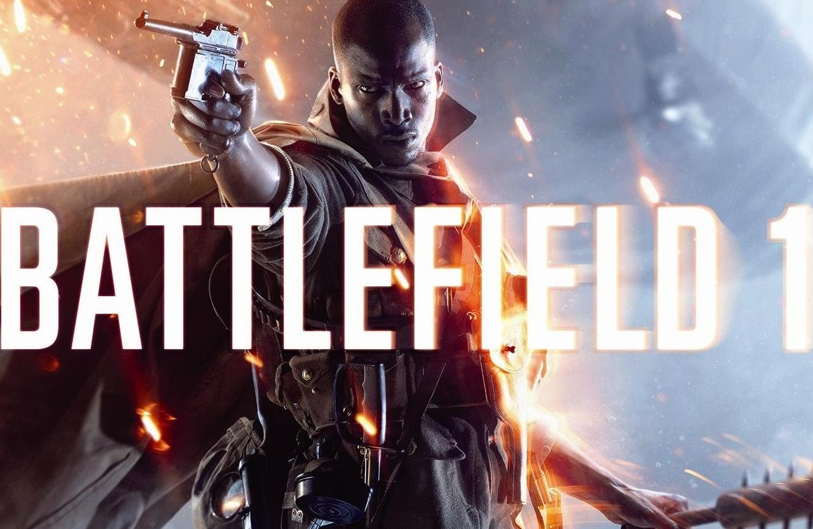
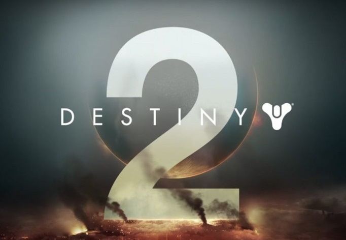

Mafia III получит демоверсию
Разработчики из студии Harbor 13 анонсировали то, что, по-хорошему, должно присутствовать в играх сразу, с первого же дня продаж. Мы сейчас говорим о рабочей демоверсии.
Так что если вы ещё не испытали счастья побывать в шкуре бандита мафиози Линкольна Клея, то скоро вы сможете это сделать бесплатно; главное, не забывайте, что у любой демоверсии есть ограничения, и демо Mafia III — не исключение. Бесплатно разрешат поиграть только в рамках вступительного акта.
Кроме того, авторы игры пообещали, что в Steam на Mafia III скоро начнёт действовать 50-процентная скидка. Очень разумное решение, поскольку просить 2000 рублей за скучную и однообразную игру с 44-процентным пользовательским рейтингом — верх наглости.
Насколько скоро наступит обещанное скоро
, неизвестно. На момент написания этих строк в Steam не было ни демоверсии, ни скидки.
Battlefield 1 позволит всем играть на картах из дополнений

Что нужно делать, если вам надоели входящие в состав Battlefield 1 стандартные карты? Правильно, покупать дополнения по отдельности либо все сразу в составе Premium-пакета. Но вот, в чём проблема: Premium стоит дорого, и не каждый поклонник Battlefield 1, который в силу различных причин может уделять игре лишь пару часов в неделю, считает такую покупку рациональной.
Неадекватная ценовая политика Electronic Arts приводит к тому, что серверы, на которых крутятся карты из платных дополнений, обычно либо пустые, либо серьёзно проигрывают базовым серверам по количеству игроков. Понятно, что такое положение дел не устраивает ни EA/DICE, ни игроков.
Поэтому сверху было принято волевое решение: владельцы обычного доступа к Battlefield 1 смогут поиграть на картах из дополнений, если они находятся в составе группы с игроком, у которого есть Premium. Этой функции дали название Premium-друзья
.
К сожалению, не обошлось без «костылей». Во-первых, получать опыт при игре на карте из дополнения будут только владельцы Premium или соответствующего дополнения. У приглашённых друзей он будет откладываться в своеобразную «копилку», которая «разбивается» при покупке Premium или дополнения. Во-вторых, пользоваться оружием и техникой из дополнений смогут, опять же, только владельцы Premium или конкретных дополнений. Ну, и в-третьих, приглашённые игроки не смогут получать прогресс по медалям и статьям Кодекса из соответствующего дополнения.
Напомним, что вчера состоялся окончательный (для всех) релиз дополнения «Они не пройдут». Аддон добавил в Battlefield 1 четыре новые карты, новое оружие и технику, элитный класс бойца, а также специальный игровой режим.
Весенний патч для Civilization VI

Совсем скоро Civilization VI обзаведётся уже четвёртым по счёту крупным патчем, а сегодня в Steam был опубликован внушительный список изменений. К сожалению, серьёзно воспринимать данный патч опять не получается, поскольку хоть изменений и много, но все они столь несущественны и далеки от реальных проблем с игрой, что хоть слёзы лей.
С полным перечнем изменений можно ознакомиться в Steam, мы же коснёмся основных.
Итак, переработана Гавань. Теперь этот район получает бонус соседства с центром города; кроме того, при строительстве маяка все прибрежные клетки получают +1 к выработке пищи, а при строительстве морского порта получают +2 к выработке золота. Что это означает? Только то, что селиться у моря по-прежнему губительно для развития, поскольку 1 единица пищи погоды в этой игре не делает. Дополнительное золото выглядит больше как насмешка, поскольку уж с чем-чем, а с деньгами в Civilization VI при грамотном развитии, тем более к моменту открытия морских портов, проблем нет; проблемы всегда с производством, которые лишь усугубляются при размещении города у моря.
Разработчики поняли, что Англия в Civilization VI — это одна из самых слабых игровых цивилизаций. С релизом патча Англия станет единственной торговой цивилизацией в игре — уникальный английский район всегда будет предоставлять торговый путь вне зависимости от наличия коммерческого центра.
Продолжается доработка искусственного интеллекта.
Остальные изменения уже незначительные.
Вот, собственно, и всё. Очереди производства по-прежнему нет, кнопки «Рестарт» по-прежнему нет, игра всё ещё не запоминает предыдущие настройки игрового мира. Баланс районов нужно перерабатывать полностью, равно как и продолжать внедрять элементы «качества жизни». Необходимо дорабатывать оба древа технологий и что-то делать с балансом способностей великих людей либо полностью перерабатывать их систему.
К сожалению, глядя на перечни изменений в патчах к Civilization VI, складывается впечатление, что разработчики каждый раз расписываются в собственной неспособности улучшить игру и перекладывают это дело на плечи создателей модификаций, которые давным-давно уже и интерфейс улучшили, и баланс районов реализовали, и древа технологий изменили. К сожалению, 2000 рублей просят вовсе не создатели модификаций. Так что продолжаем ждать, может, после 1-2 крупных дополнений игра обретёт достойный вид. Между тем, Civilization VI продолжает терять активную аудиторию. Может, когда показатели «онлайна» упадут ниже плинтуса, разработчики наконец-то одумаются? Или продолжат продавать новые цивилизации по 210 рублей?
Destiny 2 официально анонсирована

Собственно, вся суть в названии, и добавить тут нечего. Буквально нечего. Разработчики просто поняли, что дальше скрывать очевидное бессмысленно. Тем более, фотографии постеров с логотипом игры уже «утекли» в Сеть.
Сообщение об анонсе Destiny 2 было опубликовано на официальной страничке Destiny в Twitter. К сожалению, никаких подробностей, списка платформ и приблизительно даты выхода озвучено пока не было. Учитывая тот факт, что релиз финального дополнения Age of Triumph состоялся вчера, разработчикам очень важно будет выдержать паузу, а потом раскрутить маркетинговую кампанию, направленную на продвижение Destiny 2, по полной программе.
Fallout Shelter вышла в Steam

Сказать, что мобильная игра Fallout Shelter оказалась популярной, это ничего не сказать. Даже сама Bethesda не ожидала такого успеха, поэтому когда толпа поклонников Fallout начала бомбардировать разработчиков просьбами сделать версию для компьютеров, то отказать было просто невозможно. Сначала PC-версия Fallout Shelter появилась в собственном магазине Bethesda, затем в Windows Store, и вот, наконец-то добралась до самой многочисленной и продвинутой части PC-геймеров — пользователей Steam
Игровой режим для Windows 10

Продолжается совершенствование операционной системы Windows 10. Уже 11 апреля Microsoft откроет доступ к так называемому Creators Update, в состав которого входит несколько любопытных нововведений и улучшений.
Специально для заядлых геймеров Creators Update добавит в Windows 10 игровой режим. Его задача простая: оптимизировать вычислительные ресурсы компьютера для максимальной производительности в любимых играх, по сути, выставляя игровому приложению абсолютный приоритет. Кроме того, в игровом режиме пользователь сможет делать снимки экрана и даже записывать фрагменты игрового процесса. Если раньше для этой (уже, можно сказать, базовой для любого геймера) функциональности было необходимо использовать сторонние программы, то теперь «всё включено».
Стоит отметить, что Windows 10 является самой популярной операционной системой среди геймеров. По статистике Steam, Windows 10 установлена почти на половине всех компьютеров его пользователей.